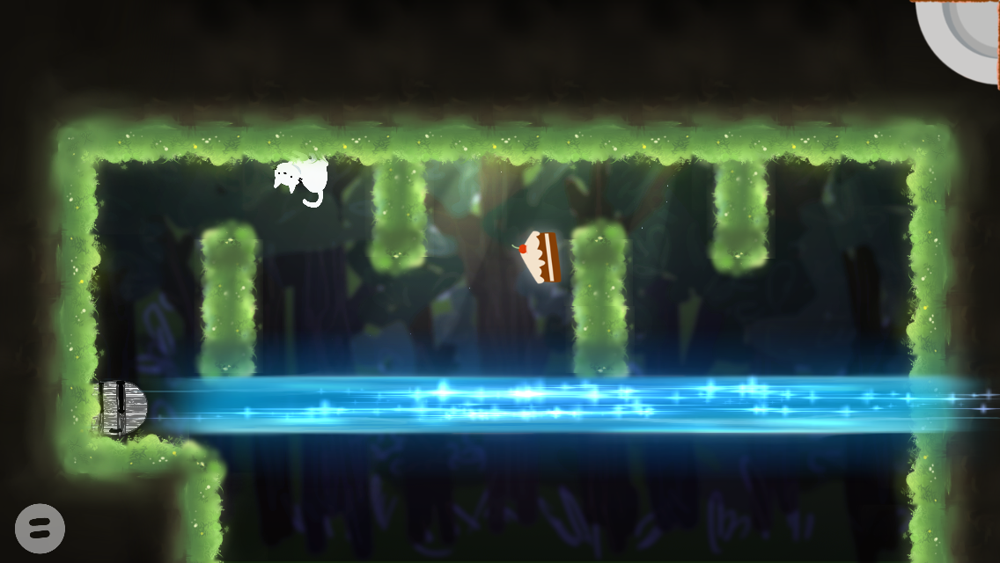

Cat's Law - 2015
Cat's Law of Universal Cake is a puzzle game where you turn the phone to use your peerless mastery of gravity to journey through the land and collect cake.
Worked for four weeks in a team of three to design and develop a game for MIT's 2015 iOS Game Development Competition. Built game framework and interface and helped with level design. Created all character art and animation, as well as UI. The game came in third place.
